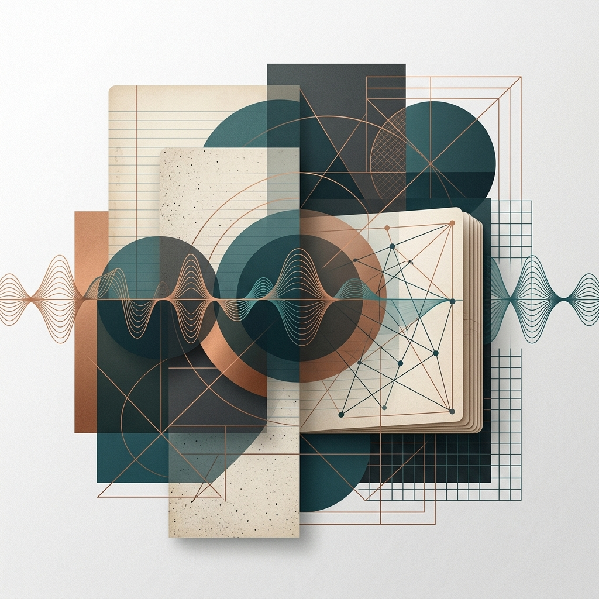

- Chargement du flux…
Aucun épisode ne correspond à cette recherche.

Mini-podcasts générés par IA qui synthétisent l'état de l'art sur des sujets pointus en science, tech et méthodologie.
Flux RSS · à coller dans AntennaPod / Pocket Casts
Aucun épisode ne correspond à cette recherche.